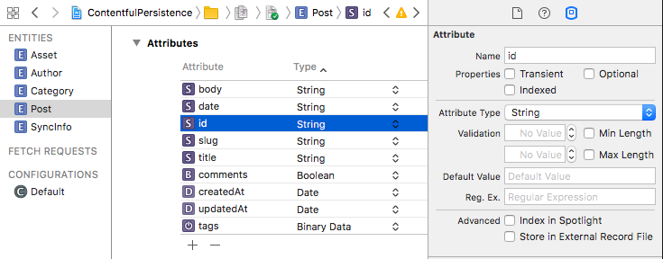

ContentfulPersistence Reference
ContentfulPersistence Reference
contentful-persistence.swift


Simplified persistence for the Contentful Swift SDK.
Contentful is a content management platform for web applications, mobile apps and connected devices. It allows you to create, edit & manage content in the cloud and publish it anywhere via powerful API. Contentful offers tools for managing editorial teams and enabling cooperation between organizations.
Usage
The SynchronizationManager manages the state of your CoreData database and keeps it in sync with the data from your Contentful Space:
// Tell the library which of your `NSManagedObject` subclasses that conform to `EntryPersistable` should be used when mapping API resonses to CoreData entities.
let entryTypes = [Author.self, Category.self, Post.self]
// Initialize the data store and it's schema.
let store = CoreDataStore(context: self.managedObjectContext)
let persistenceModel = PersistenceModel(spaceType: SyncInfo.self, assetType: Asset.self, entryTypes: entryTypes)
// Initialize the Contentful.Client with a persistenceIntegration which will receive messages about changes when calling `sync methods`
self.client = Client(spaceId: "<YOUR_SPACE_ID>", accessToken: "<YOUR_ACCESS_TOKEN>")
// Create the manager.
self.syncManager = SynchronizationManager(client: self.client,
localizationScheme: LocalizationScheme.all, // Save data for all locales your space supports.
persistenceStore: self.store,
persistenceModel: persistenceModel)
// Sync with the API.
self.syncManager.sync() { _ in
do {
// Fetch all `Posts` from CoreData
let post: Post? = try self.store.fetchAll(type: Post.self, predicate: NSPredicate(value: true))
} catch {
// Handle error thrown by CoreData fetches.
}
}
Define your CoreData model
To make your model classes work with contentful-persistence.swift you will need to either conform to ContentSysPersistable for Contentful Assets, or EntryPersistable for Contentful entry types.
Then you will need to make the corresponding model in your projects xcdatamodel file. Both EntryPersistable and ContentSysPersistable types must have a non-optional id and localeCode properties as well as optional createdAt and updatedAt date properties.
Optionality on CoreData entities is a bit different than swift optionality—optionality means that the property may be absent when a save-to-database operation is performed. To configure a property’s optionality, open the Data Model Inspector
in Xcode’s Utilities
right sidebar and toggle the Optional
checkbox:

The mapping of Contentful fields to your data model entities will be derived automatically, but you can also customize it, by implementing the static func mapping() -> [FieldName: String]? on your class.
Here is an example of a model class:
import Foundation
import CoreData
import ContentfulPersistence
import Contentful
// The following @objc attribute is only necessary if your xcdatamodel Default configuration doesn't have your module
// name prepended to the Swift class. To enable removing the @objc attribute, change the Class for your entity to `ModuleName.Post`
@objc(Post)
class Post: NSManagedObject, EntryPersistable {
// The identifier of the corresponding Content Type in Contentful.
static let contentTypeId = "2wKn6yEnZewu2SCCkus4as"
@NSManaged var id: String
@NSManaged var localeCode: String
@NSManaged var createdAt: Date?
@NSManaged var updatedAt: Date?
@NSManaged var body: String?
@NSManaged var comments: NSNumber?
@NSManaged var date: NSDate?
@NSManaged var slug: String?
@NSManaged var tags: Data?
@NSManaged var title: String?
@NSManaged var authors: NSOrderedSet?
@NSManaged var category: NSOrderedSet?
@NSManaged var theFeaturedImage: Asset?
// Define the mapping from the fields on your Contentful.Entry to your model class.
// In the below example, only the `title` and `author` fields and `featuredImage` link will be populated.
static func fieldMapping() -> [FieldName: String] {
return [
"title": "title",
"featuredImage": "theFeaturedImage",
"author": "authors"
]
}
}
Documentation
For further information, check out the Developer Documentation or browse the API documentation. The latter can also be loaded into Xcode as a Docset.
CocoaPods installation
CocoaPods is the dependency manager for Objective-C and Swift, which automates and simplifies the process of using 3rd-party libraries like the ContentfulPersistence in your projects.
platform :ios, '8.0'
use_frameworks!
target :MyApp do
pod 'ContentfulPersistenceSwift', '~> 0.7.0'
end
Carthage installation
You can also use Carthage for integration by adding the following to your Cartfile:
github "contentful/contentful.swift" ~> 0.7.0
Unit Tests
To run the tests, do the following steps:
$ make setup_env
$ carthage bootstrap --platform all
$ make test
or run them directly from Xcode.
License
Copyright © 2017 Contentful GmbH. See LICENSE for further details.